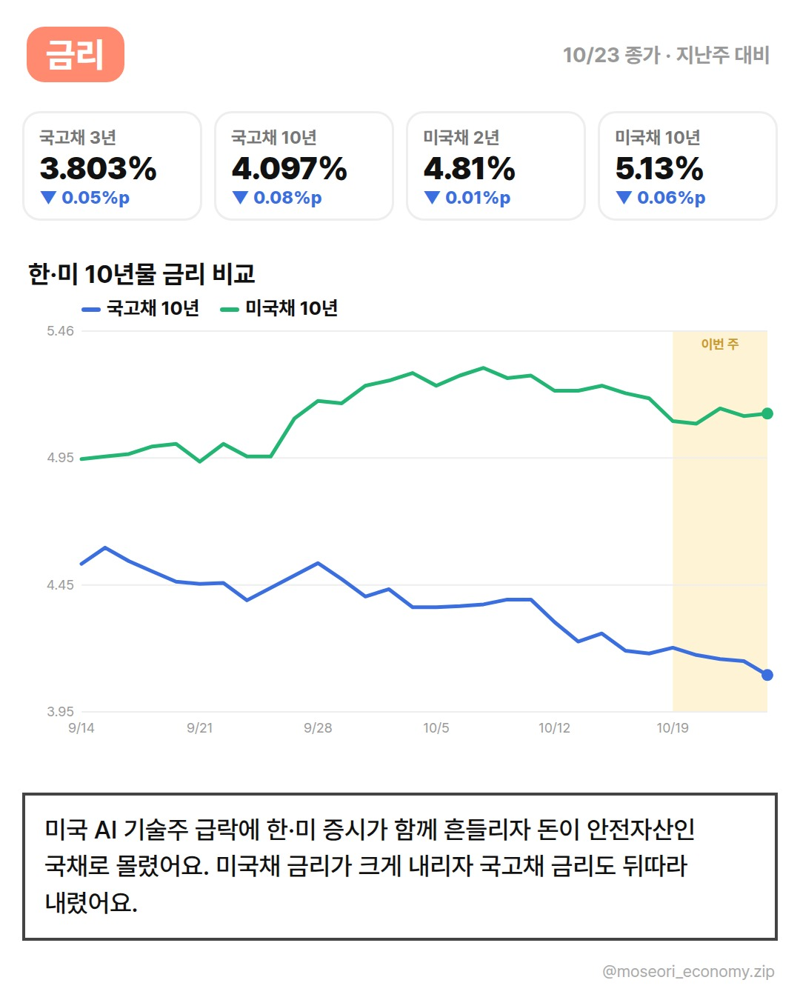
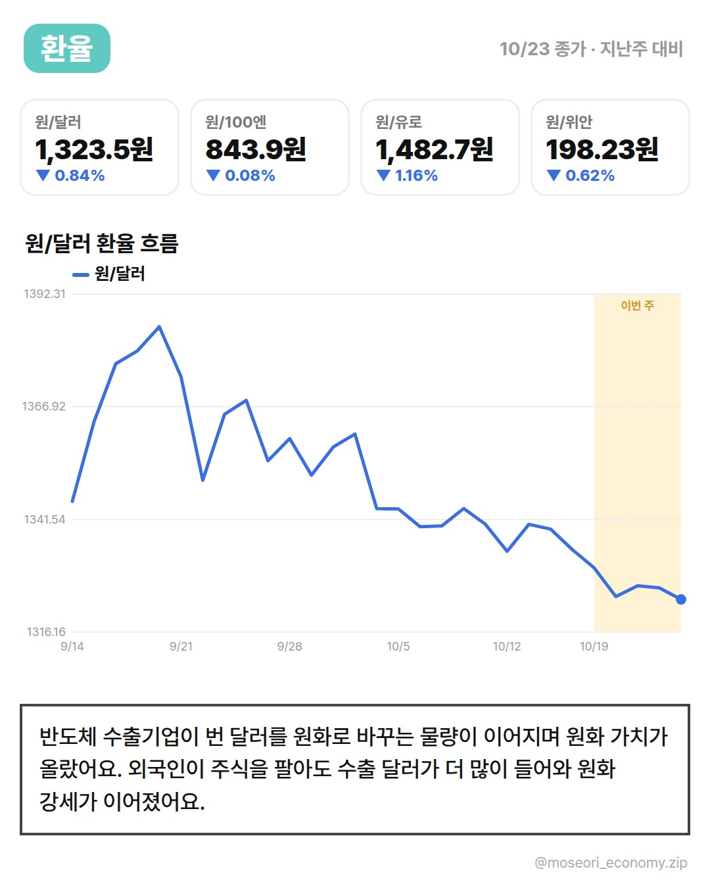
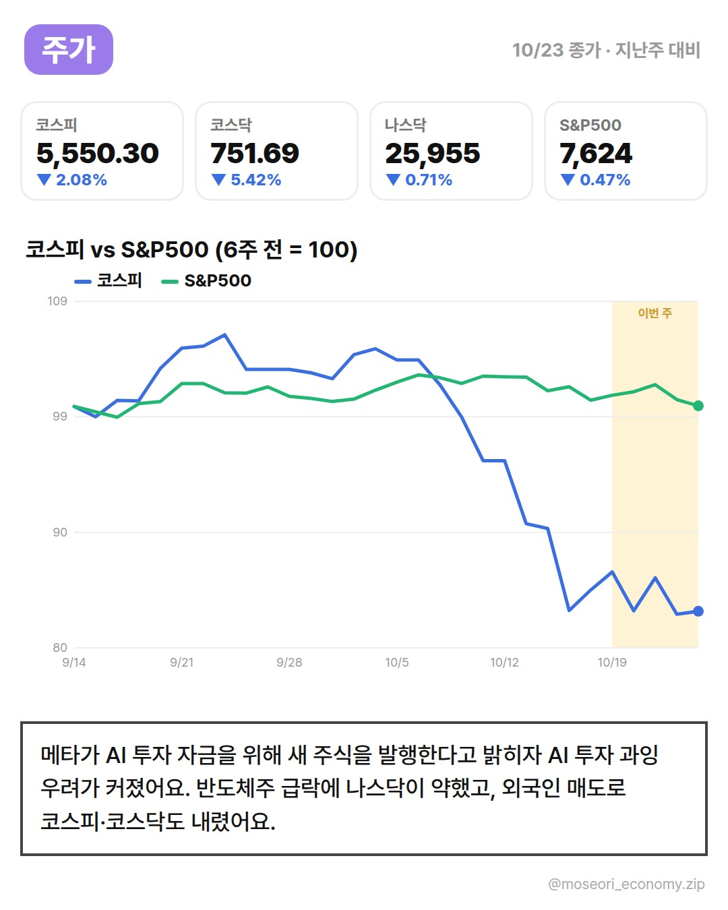
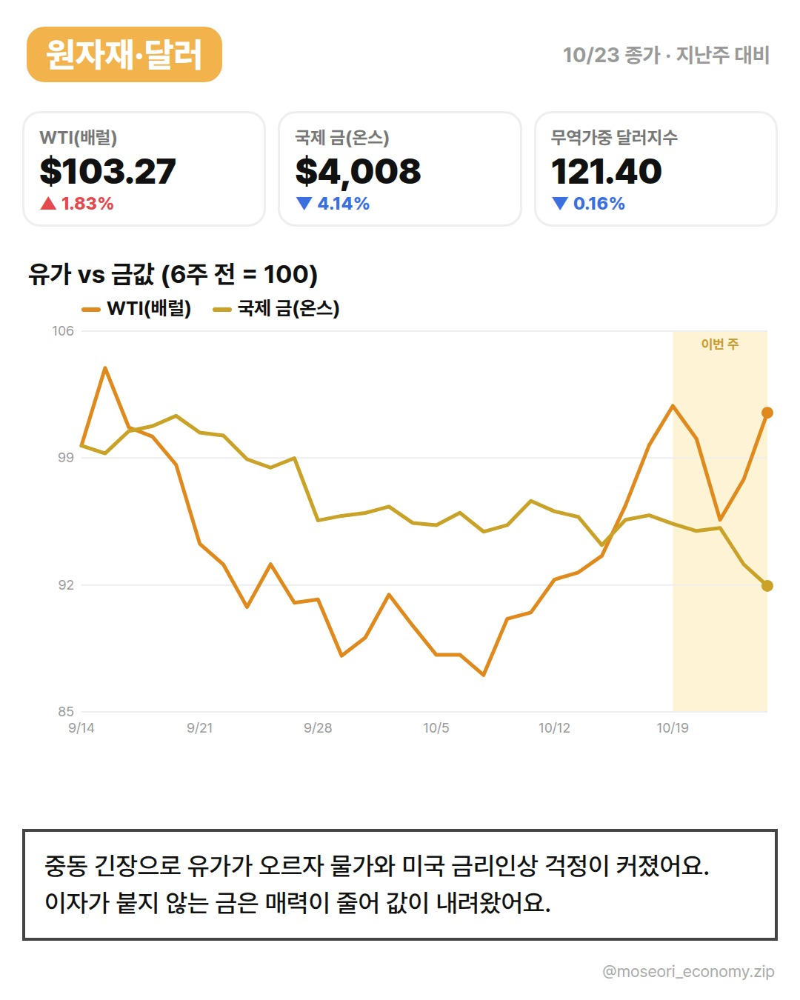

네이버 블로그 초안 · 2026년 10월 4주차
1. 네이버 블로그 글쓰기를 열어요.
2. 위에서부터 칸마다 [복사] → 스마트에디터에 붙여넣기를 해요.
3. 📷 칸이 나오면 [내려받기]한 이미지를 그 자리에 올려요.
4. 소제목 칸은 붙여넣은 뒤 '소제목' 서식으로 바꿔요.
5. 태그를 넣고 발행해요.
2026년 10월 4주차 경제지표 정리｜(시험용 제목)

사진 설명: 2026년 10월 4주차 주간 경제지표 표지
이번 주는 중동發 유가 급등으로 시작해 미국 고용 부진으로 끝난 한 주였어요. 금리·환율·주가·원자재가 각각 어떻게 움직였는지, 왜 그랬는지 차례로 정리했어요.
금리


사진 설명: 2026년 10월 4주차 금리 흐름 카드
금리 한눈에 보기 (지난주 마지막 거래일 대비 이번 주 마지막 거래일. 금리는 %p, 나머지는 %.)
| 지표 | 지난주 | 이번주 | 변화 |
|---|---|---|---|
| 국고채 3년 | 3.854% | 3.803% | ▼ 0.05%p |
| 국고채 10년 | 4.182% | 4.097% | ▼ 0.08%p |
| 미국채 2년 | 4.82% | 4.81% | ▼ 0.01%p |
| 미국채 10년 | 5.19% | 5.13% | ▼ 0.06%p |
(테스트용 샘플) 미국에서는 장기 국채 금리가 한 주 내내 올랐어요. 국채는 정부가 돈을 빌리며 발행하는 빚 문서이고, 금리가 오른다는 건 그 문서 가격이 내려갔다는 뜻이에요.
반대로 국고채 금리는 내려왔어요. 한국과 미국이 서로 다른 방향으로 움직인 주였어요.
환율


사진 설명: 2026년 10월 4주차 환율 흐름 카드
환율 한눈에 보기 (지난주 마지막 거래일 대비 이번 주 마지막 거래일. 금리는 %p, 나머지는 %.)
| 지표 | 지난주 | 이번주 | 변화 |
|---|---|---|---|
| 원/달러 | 1,334.7원 | 1,323.5원 | ▼ 0.84% |
| 원/100엔 | 844.6원 | 843.9원 | ▼ 0.08% |
| 원/유로 | 1,500.0원 | 1,482.7원 | ▼ 1.16% |
| 원/위안 | 199.46원 | 198.23원 | ▼ 0.62% |
(테스트용 샘플) 주 초에는 중동 리스크로 안전한 달러를 찾는 수요가 늘어 원화가 약했어요.
주 후반 미국 고용지표가 부진하게 나오자 금리인상 기대가 꺾였고, 달러 힘이 빠지면서 원화가 반등했어요.
주가


사진 설명: 2026년 10월 4주차 주가 흐름 카드
주가 한눈에 보기 (지난주 마지막 거래일 대비 이번 주 마지막 거래일. 금리는 %p, 나머지는 %.)
| 지표 | 지난주 | 이번주 | 변화 |
|---|---|---|---|
| 코스피 | 5,668.05 | 5,550.30 | ▼ 2.08% |
| 코스닥 | 794.78 | 751.69 | ▼ 5.42% |
| 다우 | 52,002 | 52,215 | ▲ 0.41% |
| 나스닥 | 26,140 | 25,955 | ▼ 0.71% |
| S&P500 | 7,659 | 7,624 | ▼ 0.47% |
(테스트용 샘플) 코스피는 다시 힘을 냈고, 뉴욕증시도 고용지표 발표 뒤 금리인상 부담이 줄며 반등했어요.
금리가 덜 오를 거라는 기대는 기업이 돈을 빌리는 부담을 줄여 주기 때문에 주가에 힘이 돼요.
원자재·달러


사진 설명: 2026년 10월 4주차 원자재·달러 흐름 카드
원자재·달러 한눈에 보기 (지난주 마지막 거래일 대비 이번 주 마지막 거래일. 금리는 %p, 나머지는 %.)
| 지표 | 지난주 | 이번주 | 변화 |
|---|---|---|---|
| WTI(배럴) | $101.41 | $103.27 | ▲ 1.83% |
| 국제 금(온스) | $4,181 | $4,008 | ▼ 4.14% |
| 무역가중 달러지수 | 121.60 | 121.40 | ▼ 0.16% |
(테스트용 샘플) 중동 군사 증원과 공급 차질 우려로 유가가 크게 올랐어요.
G7이 비축유를 풀기로 합의한 뒤에는 오름세가 진정됐어요. 유가는 주유비와 물가에 바로 이어지는 만큼 다음 주에도 지켜볼 만해요.

사진 설명: 2026년 10월 4주차 한 주 정리 카드
다음 주 볼 일정
- (테스트용 샘플) 수요일 미국 CPI 발표 — 물가가 금리 전망을 다시 바꿀 수 있어요
이번 주 카드뉴스는 인스타그램에서도 볼 수 있어요.
https://www.instagram.com/p/De4j6nXkdZ4/
참고한 기사
- [채권/외환] AI 투자 불안에 美 국채 금리 급락…10년물 5% 아래로 - 뉴스핌
- 미 국채 강세에 23일 국고채 금리 일제히 하락 - 스페셜타임스
- 외국인 주식 파는데 환율은 하락? 수출기업 달러 매도 영향 - 파이낸셜뉴스
- 외국인 1조 '팔자' 달러·원 6거래일 만에 반등…1324.6원(종합) - 뉴스1
- 또 고개 든 AI 투자 과잉론…나스닥 2.6% 하락[뉴욕마감] - 머니투데이
- 뉴욕증시, AI 투자 부담 우려에 기술주 급락…나스닥 2.60% 하락 - 미디어파인
- 코스닥 3.33% 급락 781.97… 외국인·기관 동반 매도 - 서울신문
- 국제 금값 하락…유가 급등에 美 금리 인상 우려 재부각 - 글로벌이코노믹
#모서리경제 #주간경제 #경제지표 #금리 #환율 #코스피 #유가 #미국고용